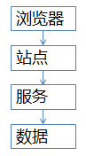

如《同样是高并发，QQ/微博/12306的架构难度一样吗？》一文所述，同样是高并发场景，三类业务的架构挑战不一样：
那么对于秒杀类业务，系统上和业务上分别能如何优化呢，这是本文要讨论的问题。
系统层面，秒杀业务的优化方向如何？
主要有两项：
（1）将请求尽量拦截在系统上游，而不要让锁冲突落到数据库。
传统秒杀系统之所以挂，是因为请求都压到了后端数据层，数据读写锁冲突严重，并发高响应慢，几乎所有请求都超时，访问流量大，下单成功的有效流量小。
一趟火车2000张票，200w个人同时来买，没有人能买成功，请求有效率为0。
画外音：此时系统的效率，还不如线下售票窗口。
（2）充分利用缓存。
秒杀买票，这是一个典型的读多写少的业务场景：
一趟火车2000张票，200w个人同时来买，最多2000个人下单成功，其他人都是查询库存，写比例只有0.1%，读比例占99.9%，非常适合使用缓存来优化。
秒杀业务，常见的系统分层架构如何？

秒杀业务，可以使用典型的服务化分层架构：
这四层分别应该如何优化呢？
一、端上的请求拦截（浏览器/APP）
想必春节大家都玩过微信的摇一摇抢红包，用户每摇一次，真的就会往后端发送一次请求么？
回顾抢票的场景，用户点击“查询”按钮之后，系统卡顿，用户着急，会不自觉的再去频繁点击“查询”，不但没用，反而平白无故增加系统负载，平均一个用户点5次，80%的请求是这么多出来的。
JS层面，可以限制用户在x秒之内只能提交一次请求，从而降低系统负载。
画外音：频繁提交，可以友好提示“频率过快”。
APP层面，可以做类似的事情，虽然用户疯狂的在摇微信抢红包，但其实x秒才向后端发起一次请求。
画外音：这就是所谓的“将请求尽量拦截在系统上游”，浏览器/APP层就能拦截80%+的请求。
不过，端上的拦截只能挡住普通用户（99%的用户是普通用户），程序员firebug一抓包，写个for循环直接调用后端http接口，js拦截根本不起作用，这下怎么办？
二、站点层的请求拦截
如何抗住程序员写for循环调用http接口，首先要确定用户的唯一标识，对于频繁访问的用户予以拦截。
用什么来做用户的唯一标识？
ip？cookie-id？别想得太复杂，购票类业务都需要登录，用uid就能标识用户。
在站点层，对同一个uid的请求进行计数和限速，例如：一个uid，5秒只准透过1个请求，这样又能拦住99%的for循环请求。
一个uid，5s只透过一个请求，其余的请求怎么办？
缓存，页面缓存，5秒内到达站点层的其他请求，均返回上次返回的页面。
画外音：车次查询和余票查询都能够这么做，既能保证用户体验（至少没有返回404页面），又能保证系统的健壮性（利用页面缓存，把请求拦截在站点层了）。
OK，通过计数、限速、页面缓存拦住了99%的普通程序员，但仍有些高端程序员，例如黑客，控制了10w个肉鸡，手里有10w个uid，同时发请求，这下怎么办？
三、服务层的请求拦截
并发的请求已经到了服务层，如何进拦截？
服务层非常清楚业务的库存，非常清楚数据库的抗压能力，可以根据这两者进行削峰限速。
例如，业务服务很清楚的知道，一列火车只有2000张车票，此时透传10w个请求去数据库，是没有意义的。
画外音：假如数据库每秒只能抗500个写请求，就只透传500个。
用什么削峰？
请求队列。
对于写请求，做请求队列，每次只透传有限的写请求去数据层（下订单，支付这样的写业务）。
只有2000张火车票，即使10w个请求过来，也只透传2000个去访问数据库：
对于读请求，怎么优化？
cache抗，不管是memcached还是redis，单机抗个每秒10w应该都是没什么问题的。
画外音：缓存做水平扩展，很容易线性扩容。
如此削峰限流，只有非常少的写请求，和非常少的读缓存mis的请求会透到数据层去，又有99%的请求被拦住了。
四、数据库层
经过前三层的优化：
你会发现，每次透到数据库层的请求都是可控的。
db基本就没什么压力了，闲庭信步。
画外音：这类业务数据量不大，无需分库，数据库做一个高可用就行。
此时，透2000个到数据库，全部成功，请求有效率100%。
画外音：优化前，10w个请求0个成功，有效性0%。
按照上面的优化方案，其实压力最大的反而是站点层，假设真实有效的请求数是每秒100w，这部分的压力怎么处理？
解决方向有两个：
（1）站点层水平扩展，通过加机器扩容，一台抗5000，200台搞定；
（2）服务降级，抛弃请求，例如抛弃50%；
原则是要保护系统，不能让所有用户都失败。
站点层限速，是个每个uid的请求计数放到redis里么？吞吐量很大情况下，高并发访问redis，网络带宽会不会成为瓶颈？
同一个uid计数与限速，如果担心访问redis带宽成为瓶颈，可以这么优化：
（1）计数直接放在内存，这样就省去了网络请求；
（2）在nginx层做7层均衡，让一个uid的请求落到同一个机器上；
画外音：这个计数对数据一致性、准确性要求不高，即使服务重启计数丢了，大不了重新开始计。
除了系统上的优化，产品与业务还能够做一些折衷，降低架构难度。
业务折衷一
一般来说，下单和支付放在同一个流程里，能够提高转化率。对于秒杀场景，产品上，下单流程和支付流程异步，放在两个环节里，能够降低数据库写压力。以12306为例，下单成功后，系统占住库存，45分钟之内支付即可。
业务折衷二
一般来说，所有用户规则相同，体验会更好。对于秒杀场景，产品上，不同地域分时售票，虽然不是所有用户规则相同，但能够极大降低系统压力。北京9:00开始售票，上海9:30开始售票，广州XX开始售票，能够分担系统压力。
业务折衷三
秒杀场景，由于短时间内并发较大，系统返回较慢，用户心情十分焦急，可能会频繁点击按钮，对系统造成压力。产品上可以优化为，一旦点击，不管系统是否返回，按钮立刻置灰，不给用户机会频繁点击。
业务折衷四
一般来说，显示具体的库存数量，能够加强用户体验。对于秒杀场景，产品上，只显示有/无车票，而不是显示具体票数目，能够降低缓存淘汰率。
画外音：显示库存会淘汰N次，显示有无只会淘汰1次。更多的，用户关注是否有票，而不是票有几张。
无论如何，产品技术运营一起，目标是一致的，把事情做好，不存在谁是甲方，谁是乙方的关系。
总结
对于秒杀系统，除了产品和业务上的折衷，架构设计上主要有两大优化方向：
（1）尽量将请求拦截在系统上游；
（2）读多写少用缓存；
任何脱离业务的架构设计是耍流氓。
欢迎关注公众号：“Java架构师学习”
你会喜欢的！